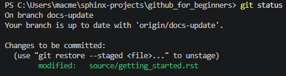

Getting started¶
Follow this tutorial to learn basic how to publish your project on GitHub.
Introduction¶
In this tutorial, you will learn:
How to create a repository.
How to create a new branch.
How to publish an edited file to GitHub.
Open a pull request.
Merge a pull request.
We will perform all these steps in a terminal.
What you will need:
Git versioning system.
A GitHub account.
Any editor that lets you edit text files. An IDE such as Visual Studio Code is recommended.
Create a repository¶
First, you need to create a repository.
Create a new project in Visual Studio Code.
Press
Ctrl+`. This will open the terminal at the bottom.In the terminal, enter
gh repo create. This will open an interactive repository creator.Select
Create a new repository on github.com from scratch.Next, enter repository name.
Add a description.
Choose
Publicvisibility. This will make the repository visible to others.Enter
Yto add aREADME.mdfile. This will be our first file on GitHub.On the next two steps, simply press Enter to apply default settings.
After that, enter
Yto confirm creating the repository. You will see a confirmation message similar to this:
? This will create "docs-update" as a public repository on github.com. Continue? Yes ✓ Created repository macmelchior/docs-update on github.com https://github.com/macmelchior/docs-update
Enter
Yto clone the new repository. This will create a copy of the repository on your computer.You should see the following file structure:

Create a new branch¶
Once you have a repository, it is time to create a new branch for your changes.
Enter
git branchfollowed by branch name, for example docs-update.Switch to the branch. Enter
git checkout docs-update.Push the branch to GitHub. Enter
git push origin docs-update.
Edit and publish the file¶
Once you have a branch, you can start editing the README.md file.
Next, you will publish the edited version in your GitHub repository.
Open the
README.mdfile in Visual Studio Code.Edit the file. Add a short description of the repository.
Open the terminal.
Enter
git add README.md.Enter
git statusto make sure that your file is added. You should see something like this:
Now you have to commit your edited file. Enter
git commit.COMMIT_EDITMSGfile will open. Enter the commit message in the window. It can be a short description of the changes.Click Commit.
Now it is time to push the file. Enter
git push origin docs-update. This will make the file visible on GitHub. To view it, make sure to select correct branch.
Open a pull request¶
Once you have a file published in the branch, you should open a pull request. This will allow the owner of the repository (in this case – you) to add your changes to the main repository.
Enter
gh pr create. This will open an interactive creator.Enter the title.
Press
eto open a notepad.Enter the description of changes and close the notepad.
Select
Submit.You should see a link to the pull request, for example:
https://github.com/macmelchior/github_for_beginners/pull/1
Merge a pull request¶
After a pull request is opened, it needs to be merged with the main branch.
Switch to the main branch. Enter
git checkout main. You will see a confirmation message:$ git checkout main Switched to branch 'main' Your branch is up to date with 'origin/main'.
Merge the head branch. Enter
git merge docs-update.Push the changes to the main branch. Enter
git push -u origin main.